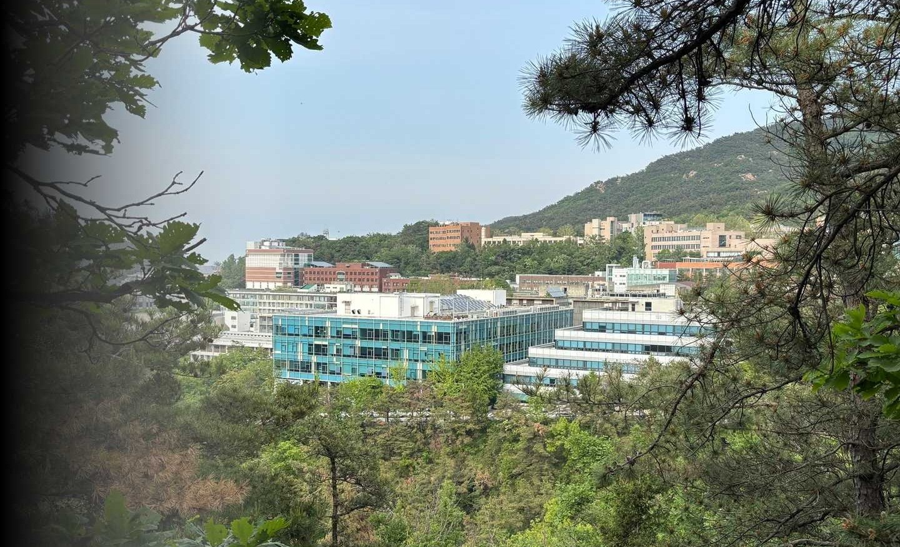
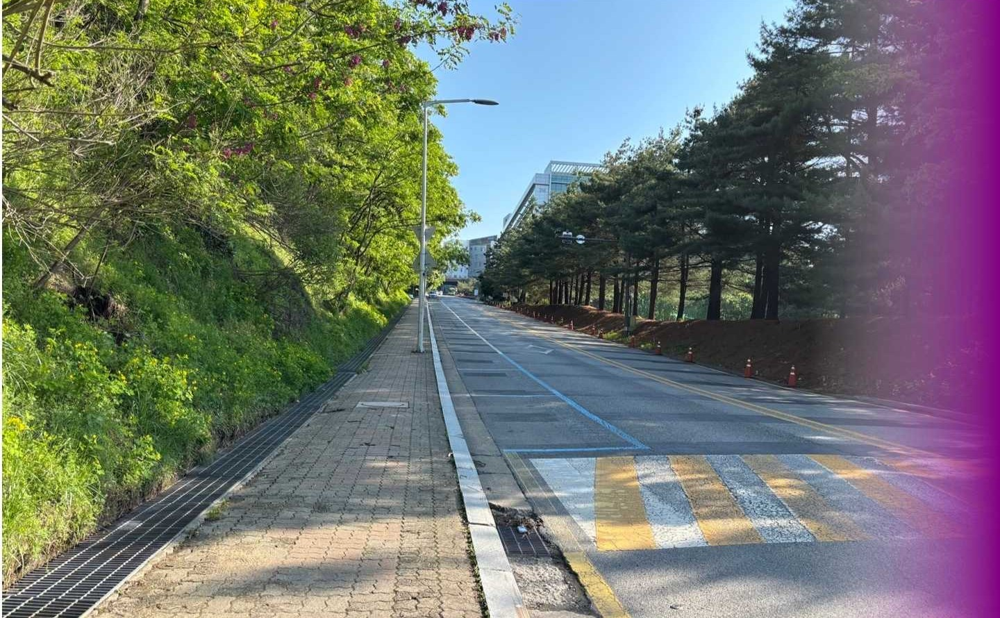
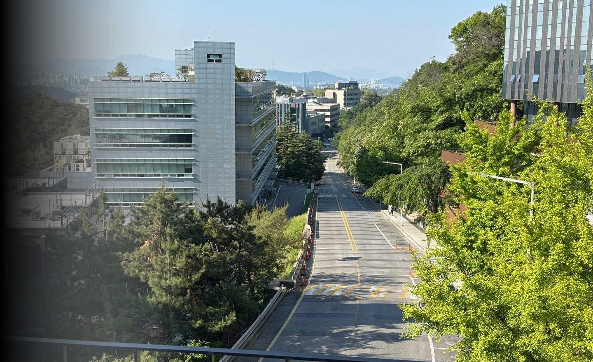
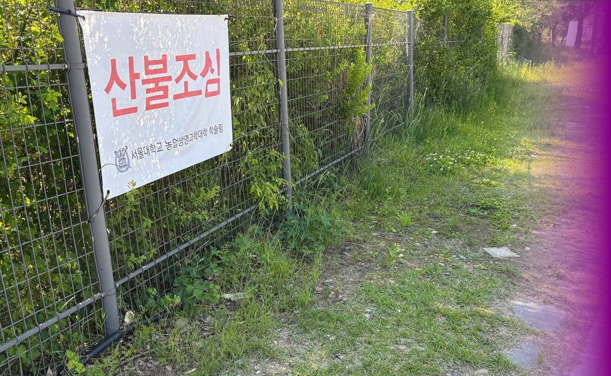

대형 산불 상황에서의 효과적인 대피를 위해서는 재난의 규모에 맞는 차별화된 대피 매뉴얼을 마련할 필요가 있다. 채진 교수가 앞에서 지적했듯 대형 산불은 상대적으로 확산이 느린 일반 도심지 화재보다 확산 속도가 빠르고 비화(바람을 타고 날아오는 불티) 현상이 더 빈번히 나타나기에, 도심지 화재보다 위험반경을 넓게 잡아야 한다. 채진 교수는 이어서 “건물에서 발생한 화재는 해당 건물과 주변만 비우면 되지만, 산불 대피는 위험지역으로부터 모두가 벗어나는 개념이기 때문에 캠퍼스 차원의 광범위한 대피를 요구하는 재난이다”라고 강조했다.


신속하고 질서 있는 대피를 위해서는 산불 발생 시 각 기관의 대피 책임자인 소방안전관리자 간 긴밀한 공조가 필요하며, 이를 위한 매뉴얼과 훈련이 필요하다. 캠퍼스관리과 관계자는 특히 제1·제2공학관 등 고지대에 위치한 공과대학을 두고, “여러 건물이 동시에 대피하는 상황에서 좁은 도로와 가파른 경사로 인한 안전사고가 발생할 수 있다는 데 동의한다”라고 밝혔다.
대피 과정에서의 안전사고를 예방하기 위해서는 재난 시 건물 간 소통 체계를 확립하고 합동 소방훈련을 진행할 필요가 있다. 백민호 교수(강원대 소방방재학과)는 “산불 대응 과정에서 모든 대피자가 질서 있게 움직이도록 하는 매뉴얼과 제도가 필요하다”라며 “서울대처럼 산에 둘러싸인 캠퍼스는 재난 대비 매뉴얼에도 그 특수성을 반영하는 것이 좋다”라고 강조했다. 캠퍼스관리과 관계자는 “물론 화재 전반에 대해서는 일반적인 화재 대응 매뉴얼을 준용할 수 있지만, 입지의 특수성을 고려하여 대형 산불과 같은 최악의 최악 상황까지도 대비하는 것이 바람직할 것”이라고 밝혔다.


그러나 서울대는 현재 각 건물 단위의 화재 대응 매뉴얼만 있을 뿐 대형 산불을 대비한 캠퍼스의 종합적인 화재 대피 계획은 갖추고 있지 않다. 구역 전체의 구성원 모두가 캠퍼스 밖까지 대피하는, 대규모 대피 소방훈련이나 매뉴얼 모두 없는 상태다. 매년 발표하는 ‘대학안전관리계획’과 각 건물의 소방계획서에도 산불은 항목에 포함돼 있지 않았다. ‘화재예방 및 안전관리에 대한 법률’ 제24조는 건물마다 배치된 소방안전관리자가 직접 작성한 소방계획서를 토대로 그 건물의 대피를 주관하도록 규정하고 있다. 하지만 소방계획서는 대형 산불과 같은 특수한 경우를 다루지 않는 경우가 많고 일반적인 대피 규정만을 담고 있어, 구체적인 대규모 동시 대피 과정은 정작 명시돼 있지 않은 상태다. 취재를 허락한 기관들의 소방계획서에는 모두 대형 산불과 관련된 매뉴얼이 없었다.
현행 지침은 재난 발생 시 해당 건물의 소방안전관리자를 필두로 건물·기관 단위의 대피가 가능한지에 초점을 두고 있다. 이에 따라 소방훈련도 개별 건물 단위로만 이뤄지고 있다. 하지만 대형 산불이 일어나면 모든 건물에서 동시에 대피가 이루어져야 한다. 서울대 구성원 약 42,000명이 길거리로 모두 쏟아져 나오는 상황에서, 모두가 질서 있게 대피하기 위해서는 각 소방안전관리자 사이의 소통이 필수적이다. 특히 윗공대처럼 경사로가 심하고 길이 좁은 경우, 대피 과정에서의 압사 등 여러 사고도 우려된다.